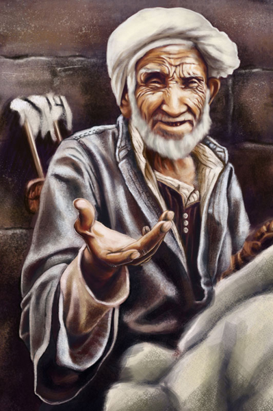
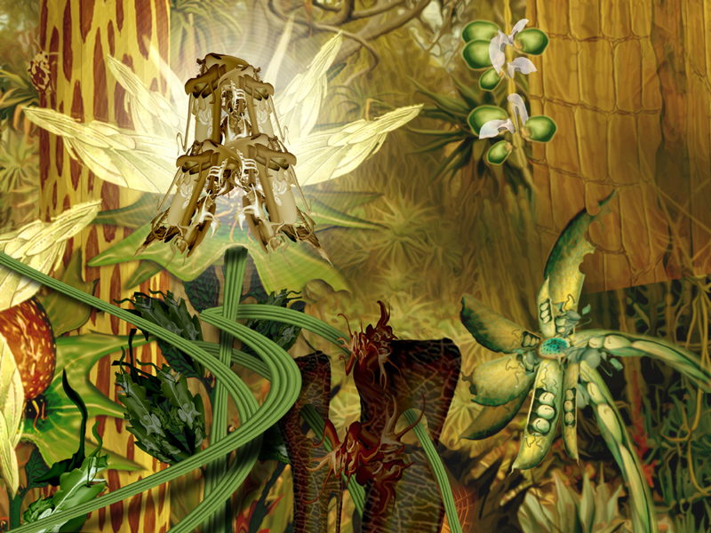
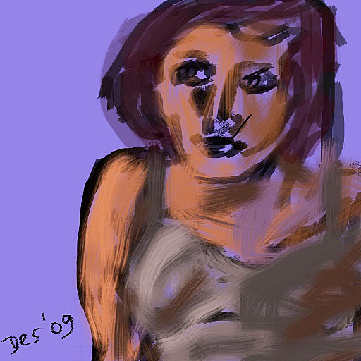
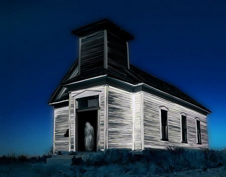

Arabsell
by Matt Katz
05/11/2022
Click image to access artist's Autogallery 2010 exhibit
Gfjgmmmmk 
by Jason Kelly
05/12/2022
Click image to access artist's Autogallery 2010 exhibit
#130809 
by Des Kilfeather
05/13/2022
Click image to access artist's Autogallery 2010 exhibit
Secret Garden
by Helene Kippert
05/14/2022
Click image to access artist's Autogallery 2010 exhibit

Syncopated Summer Passion
by Casey Kotas
05/15/2022
Click image to access artist's Autogallery 2010 exhibit

Pupil 
by Regina Lafay
05/16/2022
Click image to access artist's Autogallery 2010 exhibit
The Written Word
by Lamb
05/17/2022
Click image to access artist's Autogallery 2010 exhibit

A Little Night Music
by Jean-Louis Lassez
05/18/2022
Click image to access artist's Autogallery 2010 exhibit

Vielleicht (maybe)
by Anna La Stella
05/19/2022
Click image to access artist's Autogallery 2010 exhibit

Fish Walk
by Tammy Mike Laufer
05/20/2022
Click image to access artist's Autogallery 2010 exhibit